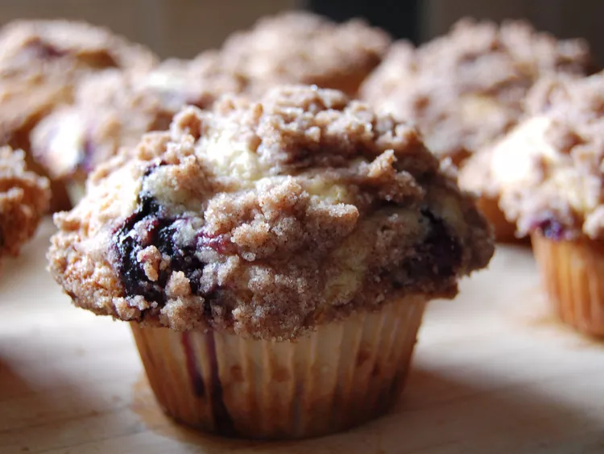

Blueberry Muffins

Blueberry muffins that are To Die For (credit: AllRecipes)
These are the ingredients you'll need to make this blueberry muffin recipe:
For the muffins: all-purpose flour, white sugar, baking powder, salt, vegetable oil, an egg, milk, and fresh blueberries
For the topping: white sugar, all-purpose flour, butter, and cinnamon
Home